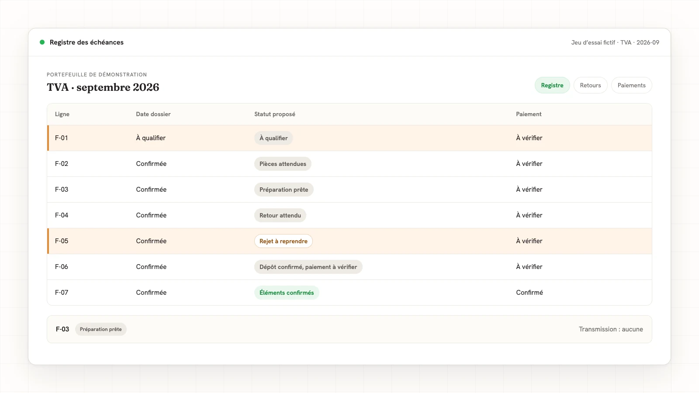
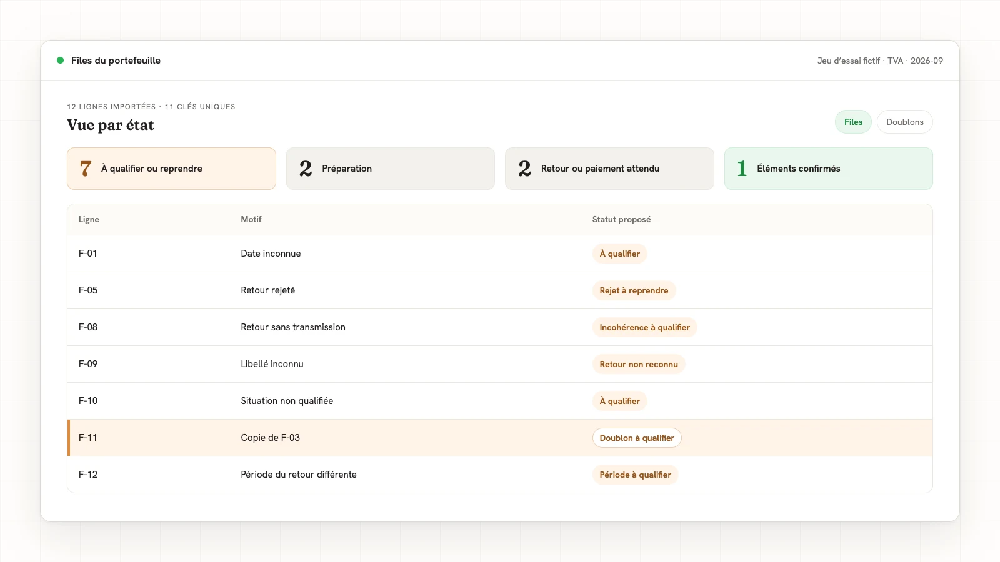

Réponse directe
Pour suivre les échéances fiscales d’un portefeuille, partez du calendrier professionnel de la DGFiP, puis qualifiez chaque obligation selon la situation du dossier. Conservez une ligne par dossier, obligation et période, avec une date confirmée, son origine et un statut distinct pour la préparation, le dépôt et le paiement. Commencez la revue par les exceptions. Une fenêtre nationale ou une déclaration prête ne suffit pas à clôturer une ligne.
Un calendrier fiscal n’est pas encore un suivi de portefeuille
Le calendrier fiscal rassemble des échéances déclaratives et de paiement, assorties de conditions. Le suivi de portefeuille rattache ces repères aux dossiers du cabinet et rend visible le prochain geste à effectuer. L’échéance interne est la date de travail choisie par le cabinet ; elle organise la préparation sans modifier l’échéance fiscale retenue.
La différence se voit sur une ligne TVA. « Octobre : à faire » laisse ouvertes plusieurs questions : quelle période, quel régime, quelle date pour ce déclarant, quelles pièces manquent, quel retour a été reçu ? Une ligne utile répond à ces questions séparément. Elle permet à un collègue de reprendre le dossier sans devoir reconstituer son histoire dans les courriels.
Le suivi des échéances est une famille de la carte des tâches répétitives du cabinet. Ici, nous traitons la mécanique de suivi, pas le calcul de l’impôt : relier une obligation qualifiée à une date, classer les informations disponibles et faire ressortir les décisions en attente.
Pourquoi la tâche casse à la main
La règle tacite ressemble souvent à ceci : « Si les pièces sont arrivées, je prépare ; si le retour manque, je vérifie avant de marquer terminé. » Elle devient fragile quand le même mot, « fait », désigne tantôt une préparation, tantôt un dépôt, tantôt un règlement.
Le problème n’est pas seulement une date oubliée. C’est aussi une ligne copiée sur le mois précédent sans vérifier la période, un rejet traité dans une messagerie mais absent du tableau, ou une date connue par une seule personne. Quand cette règle reste dans sa tête, le cabinet perd le critère qui permet de distinguer un dossier avancé d’un dossier réellement documenté.
Écrivez donc ce qui autorise chaque changement d’état. « Pièces reçues » appelle un contrôle de complétude. « Préparation prête » appelle une validation. « Transmis » appelle la lecture du retour. Aucun de ces libellés n’a besoin de devenir une promesse de conformité.
Avant de commencer
Rassemblez un petit périmètre cohérent, par exemple le suivi d’un seul type d’obligation. Vous avez besoin de :
- la liste des dossiers inclus et d’un identifiant stable pour chacun ;
- la situation déclarative qualifiée par le cabinet, dont le régime et la périodicité utiles ;
- la période concernée et, lorsque l’obligation en dépend, la date de clôture ;
- la date retenue pour chaque dossier, sa référence et la personne qui l’a confirmée ;
- la liste des pièces attendues, le responsable du travail et son prochain geste ;
- les références des transmissions, retours et confirmations de paiement disponibles.
Ne partez pas d’un export de statuts pour déduire la situation fiscale. Commencez par vérifier ce que vos outils savent déjà suivre. Si une vue existante distingue dates, déclarations et paiements, gardez-la ; le besoin restant se trouve parfois seulement dans les pièces reçues par courriel ou les exceptions suivies ailleurs.
Étape 1 : distinguer la date nationale et la date du dossier
Le calendrier public sert à repérer les obligations possibles. L’échéance du dossier se confirme à partir de sa situation et de l’information pertinente pour le déclarant. Gardez ces deux niveaux séparés, même si votre tableau tient dans un classeur.
Pour octobre 2026, le calendrier professionnel indique, pour la TVA au régime réel normal : « Entre les 15 et 24 octobre 2026, dépôt et paiement de la déclaration mensuelle ou trimestrielle de TVA à la date figurant dans votre espace professionnel. » La fenêtre du 15 au 24 ne choisit donc pas une date unique pour tous les dossiers. Une ligne dont la date propre n’a pas été confirmée reste « à qualifier ».
La DGFiP précise aussi : « Retrouvez les échéanciers de vos obligations en matière de TVA et d’impôt sur les sociétés dans les rubriques », puis indique « Mes services », « Consulter » et le chemin du compte fiscal vers l’échéancier. Votre fiche conserve la référence retenue par le cabinet ; une simple copie du calendrier ne la remplace pas.
Conservez trois champs différents : repère national, échéance du dossier, date interne de préparation. Si deux références se contredisent, ouvrez une exception. Si une date est corrigée, gardez l’ancienne valeur, le motif et la validation dans l’historique. La correction ne se propage pas silencieusement à tout le portefeuille.
Étape 2 : construire une ligne qui se reprend sans explication orale
Utilisez une clé composée : identifiant du dossier, obligation et période. Deux échéances d’un même dossier restent deux lignes. Deux copies de la même obligation sur la même période ne deviennent pas deux travaux à compter.
| Champ | Contenu attendu | Si l’information manque |
|---|---|---|
| Dossier + obligation + période | Clé stable et unique | Exception avant classement |
| Situation déclarative | Qualification retenue par le cabinet | À qualifier |
| Échéance du dossier | Date et référence confirmées | Aucune date inventée |
| Date interne | Date de travail choisie par l’équipe | Ne pas la confondre avec l’échéance fiscale |
| Pièces | Attendu, reçu et manque identifié | Pièces attendues |
| Préparation et validation | Avancement et décision enregistrée | Prochaine action explicite |
| Transmission et retour | Références, période, résultat | Retour attendu ou anomalie |
| Paiement | Confirmation distincte lorsqu’il est suivi | Paiement à vérifier |
| Mise à jour | Date et origine de l’information | Information à recontrôler |
Une pièce justificative peut ici être la trace retenue pour expliquer un changement d’état. Le tableau pointe vers cette trace dans l’outil autorisé ; il ne remplace pas le document par un « oui » impossible à vérifier.
Attribuez le prochain geste à un responsable dans la fiche opérationnelle. La vue de pilotage n’a pas besoin d’afficher son nom : elle compte les états et les motifs. Cette séparation permet de traiter les dossiers sans établir un classement individuel des collaborateurs.

Étape 3 : séparer préparation, retour et paiement
Les libellés ci-dessous sont une convention de travail Memlia, pas des catégories fiscales officielles. Leur intérêt est de rendre le prochain geste explicite. Un état ne remplace jamais la référence qui l’a déclenché.
| Condition connue | Statut proposé | Prochain geste |
|---|---|---|
| Situation ou date non confirmée | À qualifier | Confirmer le périmètre et la date |
| Pièce attendue absente | Pièces attendues | Préparer une demande à relire |
| Pièces présentes, aucune transmission | Préparation prête | Faire contrôler et valider la préparation |
| Transmission indiquée, retour absent | Retour attendu | Rechercher le retour de cette transmission |
| Retour de rejet | Rejet à reprendre | Lire le motif et documenter la suite |
| Retour accepté, paiement non confirmé | Dépôt confirmé, paiement à vérifier | Vérifier séparément le règlement suivi |
| Retour accepté et paiement confirmé | Éléments confirmés | Conserver les références et la décision de clôture |
| Retour sans transmission ou valeur inconnue | Incohérence à qualifier | Résoudre l’information contradictoire |
Dans une obligation sans paiement suivi, écrivez explicitement « sans objet » après qualification, plutôt que d’assimiler une case vide à un règlement confirmé. Le jeu ci-dessous porte seulement sur des lignes où le paiement est suivi : il ne traite pas cette branche comme une réussite automatique.
Les statuts de préparation restent séparés des faits de transmission. Un retour accepté ne valide pas à lui seul le contenu fiscal ni le paiement. Pour une pièce manquante, la méthode de relance des pièces clients explique comment préparer la demande et conserver la validation de l’envoi.
Étape 4 : ouvrir la file des exceptions avant les totaux
Commencez par les dates inconnues, les rejets et les contradictions. Puis regardez les pièces manquantes et les retours attendus. Chaque exception comporte un motif, la ligne concernée et le prochain geste. Une alerte sans action associée laisse le problème entier.
La date de préparation choisie par le cabinet peut déclencher une alerte interne. Le suivi la nomme comme telle. Si l’échéance fiscale confirmée est inconnue, il n’annonce pas un retard fiscal ; il signale une qualification à terminer. Les seuils d’alerte et la fréquence de revue sont les paramètres de l’équipe, pas des délais réglementaires ajoutés.
Un agrégat non nominatif est un total par état ou motif, sans nom de collaborateur. Comptez les lignes uniques sur un périmètre et une période affichés. Ne nommez pas « dossiers terminés » un compteur d’échéances : un dossier peut porter plusieurs obligations. Dans le jeu fictif, les quatre grandes files comptent les douze lignes une fois chacune.
Pour les données personnelles éventuellement présentes dans les fiches, le principe de minimisation demande des données « adéquates, pertinentes et limitées à ce qui est nécessaire au regard des finalités pour lesquelles elles sont traitées ». Dans notre convention, les accès détaillés servent au traitement des dossiers ; les totaux servent au pilotage, sans palmarès de personnes. Un code de dossier reste une donnée à protéger lorsqu’il permet de retrouver quelqu’un.

La règle écrite
La frontière. Voici la répartition du travail pour le suivi, une fois les informations fiscales qualifiées par le cabinet.
| Se prépare seul | Attend une validation | Reste humain |
|---|---|---|
| Liste des lignes uniques et informations absentes | Date et qualification proposées à confirmer | Choix de l’obligation applicable au déclarant |
| Classement des faits fournis et file des exceptions | Relance préparée et changement de périmètre | Interprétation d’un rejet ou d’une contradiction |
| Totaux par état et contrôle des références manquantes | Clôture d’une ligne avec ses éléments | Décision de transmission et de paiement |
La proposition. Nous préparons des états et des exceptions à partir des faits fournis. Les dates confirmées, commentaires et décisions saisis par l’équipe restent ses données ; une régénération de la proposition ne les écrase pas. Le responsable relit la ligne et rattache les confirmations retenues. La méthode de recette consiste à faire vérifier la règle et ses sorties par l’équipe avant usage sur ses dossiers.
L’arrêt. Une situation non qualifiée, une date inconnue ou une clé dupliquée interdit une conclusion positive. Un retour présent sans transmission correspondante, un libellé non reconnu ou une référence portant une autre période ouvre une exception. Le traitement ne devine ni date, ni acceptation, ni paiement. Ces situations sont des cas de refus de conclusion, pas une raison de masquer la ligne.
Le jeu d’essai. Nous avons exécuté un classement déterministe sur douze lignes entièrement fictives : les neuf situations de base, une qualification absente, un doublon et une référence de retour hors période. Les champs de confirmation sont des données d’essai fournies au programme. Il n’a consulté aucun espace fiscal et n’a réalisé aucune déclaration ou opération de paiement.
Rejoué sur le jeu fictif
Les libellés du tableau reprennent les sorties réellement obtenues. La priorité de classement place les anomalies de clé et de période avant les états d’avancement. Elle ne prétend pas faire l’analyse fiscale du dossier.
| Cas joué | Sortie obtenue | Décision |
|---|---|---|
| F-01 : date inconnue | À qualifier | Aucune date attribuée |
| F-02 : pièce absente | Pièces attendues | Préparer une demande à relire |
| F-03 : pièces présentes, rien transmis | Préparation prête | Valider avant transmission |
| F-04 : transmission, sans retour | Retour attendu | Rechercher le retour |
| F-05 : retour rejeté | Rejet à reprendre | Lire le motif |
| F-06 : retour accepté, paiement inconnu | Dépôt confirmé, paiement à vérifier | Vérifier le paiement séparément |
| F-07 : retour accepté et paiement confirmé | Éléments confirmés | Conserver les références fictives |
| F-08 : retour sans transmission | Incohérence à qualifier | Résoudre la contradiction |
| F-09 : retour non reconnu | Retour non reconnu | Faire qualifier le libellé |
| F-10 : situation non qualifiée | À qualifier | Confirmer l’obligation applicable |
| F-11 : clé répétée | Doublon à qualifier | Ne pas compter deux travaux |
| F-12 : retour d’une autre période | Période à qualifier | Rattacher le bon retour |
Le regroupement exécuté donne sept lignes à qualifier ou reprendre, deux en préparation, deux en attente de retour ou de paiement et une avec les éléments confirmés. Ces nombres décrivent uniquement les douze lignes du jeu. La copie F-11 est isolée comme anomalie : les douze lignes représentent onze clés uniques, pas douze obligations distinctes. Ils ne mesurent ni un gain de temps ni la qualité fiscale d’un portefeuille réel.
Les erreurs à éviter
- Choisir une date dans la fenêtre nationale. Une date précise sans qualification donne une fausse assurance. Conservez la référence propre au dossier.
- Employer « terminé » pour tout. Séparez préparation, transmission, retour et paiement ; gardez le critère de clôture écrit.
- Écraser le mois précédent. Créez une nouvelle ligne pour la période suivante et conservez l’historique de la période traitée.
- Compter les copies d’exports comme des travaux. Contrôlez la clé et les doublons avant les totaux.
- Refaire ce que l’outil existant suit déjà. Identifiez d’abord le geste encore manuel entre les outils, pas un nouveau tableau pour lui-même.
Questions fréquentes
Peut-on suivre le portefeuille dans un classeur ?
Oui, si la clé, les champs et les états restent explicites. Utilisez une liste fermée pour les statuts, séparez les saisies humaines des propositions et conservez les liens vers les traces. Le support importe moins que la possibilité de reprendre une ligne sans interpréter une couleur.
Que faire lorsqu’une échéance du dossier n’est pas connue ?
Gardez la ligne « à qualifier », avec le motif et le responsable du prochain geste. Ne choisissez ni le début ni la fin de la fenêtre nationale par défaut. La confirmation devient un travail visible, au lieu d’être dissimulée derrière une date supposée.
Une déclaration prête peut-elle être comptée comme déposée ?
Non dans cette méthode de suivi. « Préparation prête » décrit les pièces et le travail disponible ; « dépôt confirmé » exige le retour correspondant retenu dans la fiche. Le paiement dispose de sa propre confirmation.
Comment piloter sans comparer les collaborateurs ?
Affichez des totaux par obligation, période, état ou motif, puis réservez les fiches détaillées aux personnes qui traitent le dossier. Le responsable cherche les décisions qui manquent, pas un classement des personnes. La vue indique aussi son périmètre et sa dernière mise à jour.
La règle à retenir
Une échéance utile relie une obligation qualifiée, une date confirmée et des faits retrouvables. Le suivi prépare le prochain geste ; il ne transforme jamais une information absente en déclaration ou paiement confirmé.
Pour aller plus loin
Nous prenons en charge la mécanique encore répétitive entre vos outils : rassembler les faits de suivi, préparer les exceptions et les demandes à relire, conserver les saisies de l’équipe et maintenir la règle. Cette automatisation dans les outils du cabinet part du besoin réellement laissé manuel. Le cabinet garde la qualification fiscale, les validations et les décisions de transmission et de paiement.